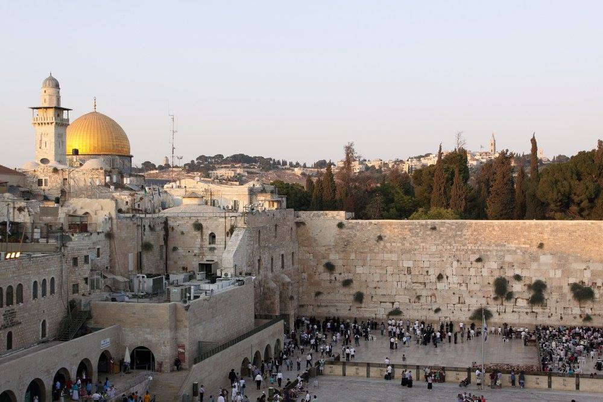
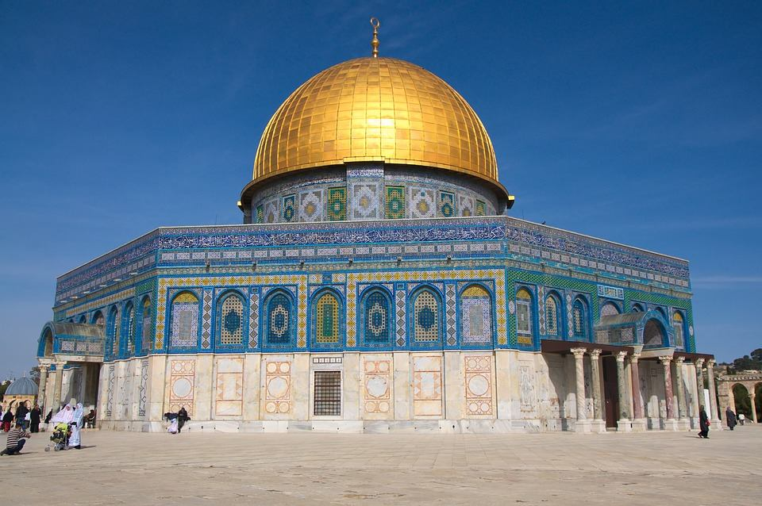
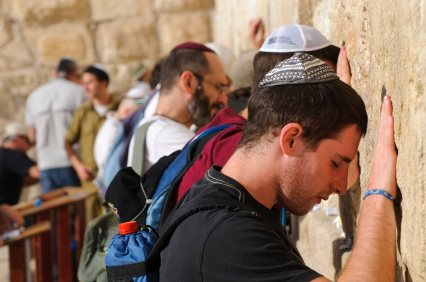
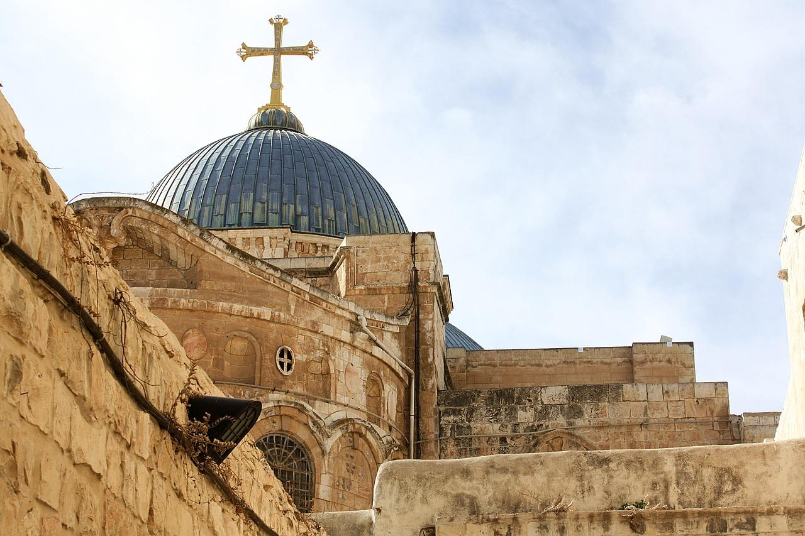
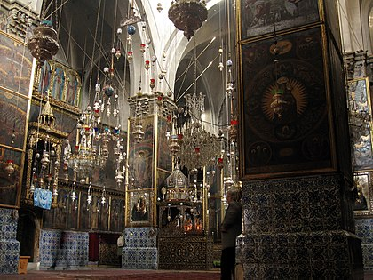
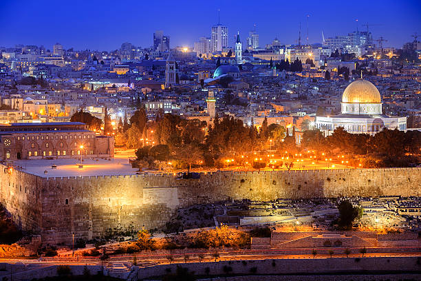

美國總統川普(Donald Trump)於台灣時間2017年12月7日正式承認，耶路撒冷為以色列首都。
川普強調，美國依舊有意促進以巴和談，即使知道此舉會有許多爭議，但他相信將開啟解決以巴爭端的新模式。
多年來美國總統在情勢判斷下，不斷延後承認耶路撒冷是以色列首都，卻始終無助於達成雙方和平的效果。所以川普認為，落實美國國會1995年通過的《耶路撒冷大使館法》勢在必行，「是時後正式承認耶路撒冷為以色列首都了。」同時指示國務院規劃美國大使館遷館作業。
川普承認耶路撒冷為以色列首都後，巴勒斯坦人在加薩走廊、約旦河西岸、耶路撒冷舊城區等處抗議，和以色列軍方爆發嚴重衝突。
巴勒斯坦人憤怒燃燒美國、以色列國旗，朝以色列士兵丟擲石塊，卻被催淚瓦斯、橡膠子彈等回擊壓制，多日衝突造成人員傷亡。穆斯林國家的美國大使館也遭到民眾包圍示威。
巴勒斯坦總統阿巴斯（Mahmoud Abbas）表示：「美國放棄成為和平調解人的角色，完全無法接受川普所做的決定。巴勒斯坦軍方還向以色列方向發射兩枚火箭，但警告意味濃厚。巴勒斯坦伊斯蘭組織哈瑪斯（Ḥamās）也揚言要發動起義，反抗以色列。

在政治上，以色列(猶太人)認為巴勒斯坦地區，是上帝承諾賜予亞伯拉罕後裔–猶太人的應許之地。猶太人曾在巴勒斯坦地區建立起自己的王國，但這個王國後來滅亡，猶太人從此散居世界各地。但流亡世界各地的猶太人在基督教社會受到歧視，他們認為受到迫害是因為沒有屬於自己的國家，因此希望能夠返回上帝的應許之地–巴勒斯坦。
對巴勒斯坦(阿拉伯人)而言，在猶太人離開的期間，許多信奉伊斯蘭教的阿拉伯人已定居在巴勒斯坦地區。
1947年11月，聯合國通過「巴勒斯坦分割方案」，將巴勒斯坦分割成兩個國家，一邊屬於猶太人，一邊屬於阿拉伯人。隔年5月14日，猶太人在聯合國劃分給他們的土地上建立起自己的國家以色列。巴勒斯坦人與猶太人之間的紛爭其實是搶奪地盤之爭，巴勒斯坦人要求歸還土地，而猶太人主張這裡是上帝賜予我們的土地，因此衝突不斷上演。
宗教上，耶路撒冷更同時是伊斯蘭教、猶太教和基督教的聖地.

對伊斯蘭教信徒而言，《可蘭經》中記載，某夜穆罕默德在天使的帶領下，騎上飛馬前往一座遠方的城市，並在天上見到阿拉或歷代的先知們。信徒們後來猜測這座遠方的城市就是耶路撒冷。
其中最具代表性的建築是圓頂清真寺。猶太人祖先亞伯拉罕在一塊岩石上聽見上帝的聲音，因此猶太人將這塊石頭視為「聖岩」，並在此處興建一座聖殿。但這座聖殿後來遭羅馬帝國摧毀，只留下空空的岩石。伊斯蘭教徒日後相信這塊岩石是穆罕默德在天使的帶領下，從麥加到耶路撒冷時觸碰到的「聖岩」。穆斯林便在岩石上蓋了一座圓形的屋頂，為屋頂貼上金箔，這就是圓頂清真寺。

對猶太教信徒而言，《舊約聖經》記載了一段猶太人祖先亞伯拉罕受到上帝考驗的故事。亞伯拉罕在耶路撒冷聽見了上帝的聲音，猶太人因而在此打造了一座聖殿，但這座聖殿日後遭羅馬帝國摧毀。
而西牆就是常見猶太人在此祈禱時，因流亡苦難而情緒激動流淚的「哭牆」。西元70年，猶太人建立的聖殿被羅馬帝國毀壞，只留下聖殿西側的牆。西牆是猶太人的聖地，因為這裡是猶太人最能接近以前聖殿所在地的地方。聖殿的位置差不多就是在圓頂清真寺的下方。 .

對基督教來說，耶路撒冷是耶穌基督墳墓的所在地。根據《聖經》記載，耶穌是在耶路撒冷受難，被釘於十字架上處死。而數日後，耶穌便在此復活、升天。
而聖墓教堂是基督教的聖地，耶穌墓穴即在教堂中。人們認為各各他山在這裡，也就是耶穌被處以十字架刑的地方。西元三世紀，羅馬君士坦丁大帝信奉基督教。君士坦丁大帝的母親也來耶路撒冷朝聖，下令在此山丘興建「聖墓教堂」。

耶路撒冷還有一個基督教區，就是亞美尼亞區。亞美尼亞區也是耶路撒冷舊城區中面積最小的一個，人口也最少。
約有2,500名亞美尼亞人住在耶路撒冷，其中大多數住在位於聖雅各修道院的宗主教區內或附近，宗主教區占據了亞美尼亞區的很大一部分

耶路撒冷無論在宗教意義、歷史、建築上皆與各個宗教信仰有密切關係，因此川普在政治上強制將耶路撒冷宣布為以色列首都，為一爭議性決定。
現在猶太教和伊斯蘭教仍彼此對立，如何讓二宗教間得以和平商討雙方都能接受的方案，才是目前最需要做的事情